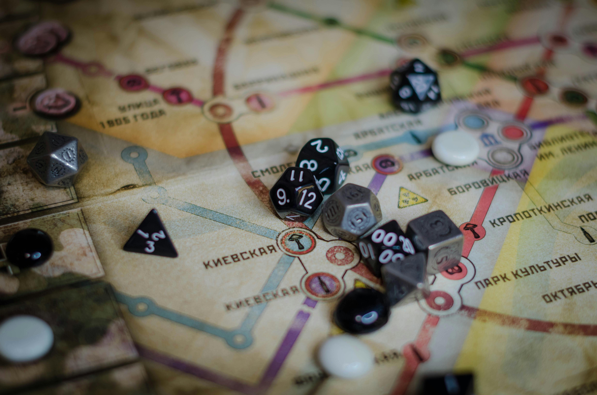
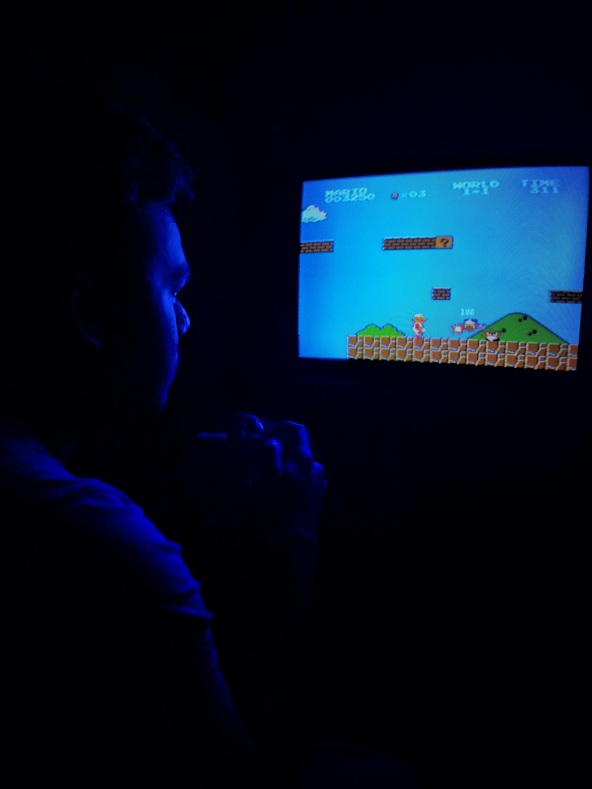

Story-Driven Journeys
Explore emotional worlds, memorable characters, and games built around discovery, atmosphere, and meaningful choices.
Hollow Skies Echo BloomExplore emotional worlds, memorable characters, and games built around discovery, atmosphere, and meaningful choices.
Hollow Skies Echo BloomTense sound design, eerie environments, and clever scares make these games perfect for players who enjoy suspense.
Night Signal Static House
These indie RPGs focus on strong worldbuilding, flexible playstyles, and satisfying progression from start to finish.
Starlight Hollow Rune ValleyRelaxing logic challenges, creative mechanics, and thoughtful level design make these picks easy to recommend.
Moonlit Memory Glass Garden
Tight controls, creative stages, and satisfying movement make these games stand out for players who love precision.
Hollow Skies Pixel SprintFarming, crafting, decorating, and quiet daily routines give these games a warm, relaxing rhythm.
Tiny Harbor Sprout TownA cozy puzzle game with calm visuals, gentle music, and clever challenges that never feel overwhelming.
A bright arcade-style action game with quick movement, stylish effects, and a soundtrack that keeps the energy high.
A charming RPG with heartfelt character moments, thoughtful quests, and a world worth spending time in.
Check out our full reviews for ratings, recommendations, and quick summaries of the latest indie games.
Read Reviews